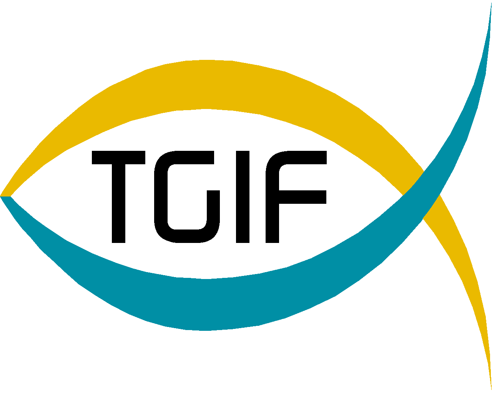

Openness, accountability, and honesty define government transparency. In a free society, transparency is
government's obligation to share information with citizens. It is at the heart of how citizens hold their public
officials accountable. Here at TGIF we believe that government should be transparent.
Governments exist to serve the people. Information on how officials conduct the public business and spend taxpayer
money must be readily available and easily understood. This transparency allows good and just governance.
Transparency promotes accountability and provides information for citizens about what their Government is doing.
We also believe that government should be participatory. Public engagement enhances the Government's effectiveness
and improves the quality of its decisions. Knowledge is widely dispersed in society, and public officials benefit
from having access to that dispersed knowledge. We invite you to use our site to become actively engaged in
American government.
TGIF works to disclose information in forms that the public can readily find and use. We solicit public feedback
to identify information of greatest use to the public.
2016 TGIF | All Rights Reserved